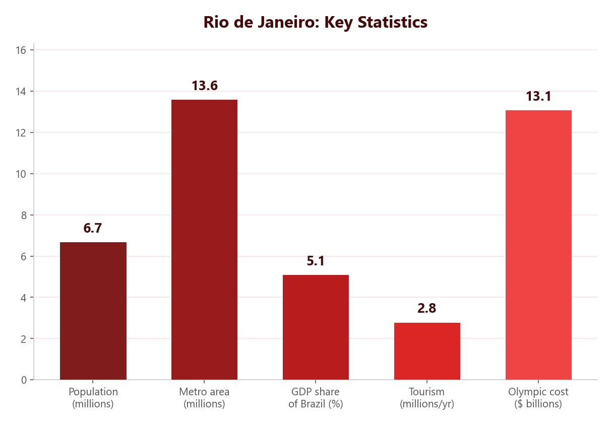

Where Is Rio de Janeiro?
Rio de Janeiro is located on the south-east coast of Brazil, in South America. It sits on the coast of the Atlantic Ocean and is found in Guanabara Bay. Brazil has a tropical savannah climate, and Rio’s average temperatures range between 21–27°C. The city is surrounded by beaches stretching over 50 km, forested hills and the famous Sugarloaf Mountain. Rio is home to around 13.6 million people, making it a megacity.
Why Is Rio Important?
Rio’s importance can be understood at three levels: regional, national and international.
Regional Importance
Rio provides essential services for its region. There are schools, hospitals and universities, giving residents access to education and healthcare. The city offers a wide range of employment, leisure and recreation opportunities. Rio is also important for its arts and culture scene, with over 50 museums.
National Importance
Many of Brazil’s most prominent companies are based in Rio, including mining, oil and telecommunications firms. The city’s port is essential for exporting iron ore, sugar and coffee. Rio produces around 5% of the entire country’s GDP, making it a major engine of the national economy.
Rio’s port handles exports of iron ore, sugar and coffee — three of Brazil’s most valuable commodities. The city generates 5% of Brazil’s total GDP.

International Importance
Rio is known around the world. It hosted the 2016 Olympic and Paralympic Games and was a host city for the 2014 FIFA World Cup. The Christ the Redeemer statue is one of the New Seven Wonders of the World and attracts millions of tourists each year. The famous Rio Carnival draws around 1.7 million visitors annually. Rio also serves as a major international transport hub.
Social Opportunities in Rio
Despite its challenges, Rio’s growth has created real social opportunities for its residents:
- Education — there are many primary and secondary schools in Rio. Around 95% of children aged 10 and above are literate. Authorities have given grants to poor families to help them keep their children in school.
- Healthcare — in the Santa Marta favela, medical staff take medical kits directly to people’s homes, since transport is often a barrier to care. They detected and treated 20 diseases. As a result, infant mortality has fallen and life expectancy has increased.
- Water supply — over 90% of Rio’s population now has access to mains water. Seven new treatment plants have been built and 300 km of pipes laid to improve supply in favelas.
- Energy — electricity supply has improved through 60 km of new power lines, a nuclear generator and a new hydroelectricity complex that will provide 30% of Rio’s electricity.
Economic Opportunities in Rio
The main reason people migrate to Rio is for jobs. When many people first arrive, around 60% end up working in the informal sector, doing jobs like shoe polishing, fruit selling and car washing. Even though these jobs pay little, they still earn more than subsistence farming in rural areas.
Large companies are now based in Rio, providing more formal work with contracted hours and workers’ rights. Steelwork companies have attracted new construction and supply industries, creating a multiplier effect — more jobs lead to more spending, which leads to even more jobs. The ‘Schools of Tomorrow’ programme teaches young people in deprived areas practical skills to help them get formal employment.
Around 60% of new arrivals in Rio work in the informal sector. The ‘Schools of Tomorrow’ programme equips young people in deprived areas with the skills needed for formal employment.
Environmental Opportunities in Rio
Rio has also created environmental opportunities to improve the city:
- Transport — the metro system has been expanded, reducing traffic congestion and carbon emissions. Toll roads and tunnels through mountains have been built to connect different parts of the city.
- Sewage — 12 new sewage treatment plants have been built and 5 km of new pipes installed. Ships are fined for discharging fuel into Guanabara Bay.
- Waste to energy — a power plant has been built that uses methane from rotting rubbish to produce electricity for 1,000 homes, processing 30 tonnes of waste per day.